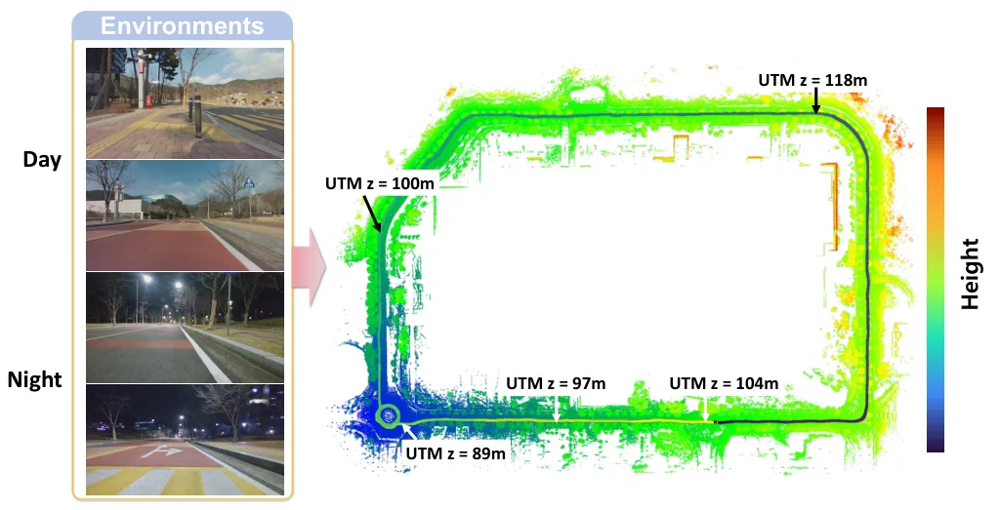
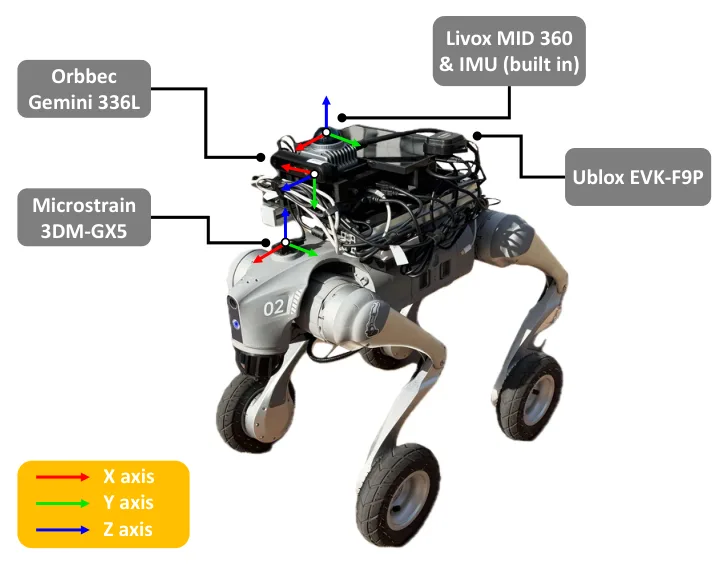
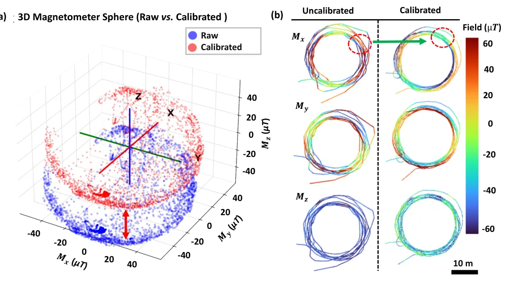
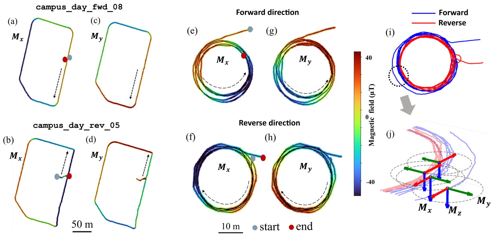
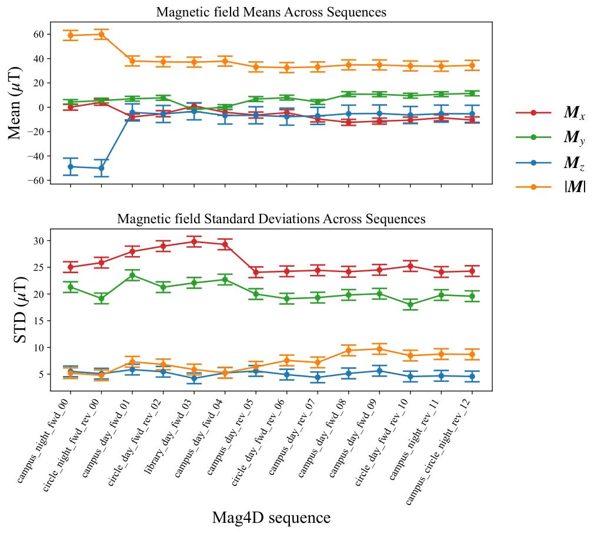
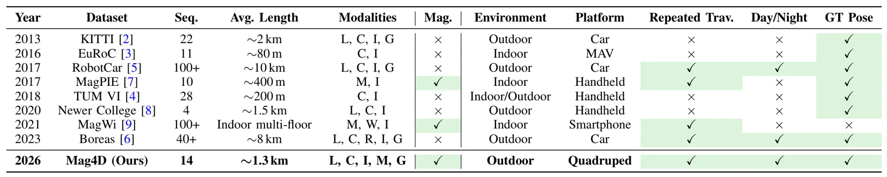
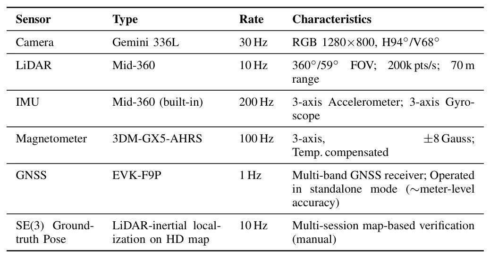
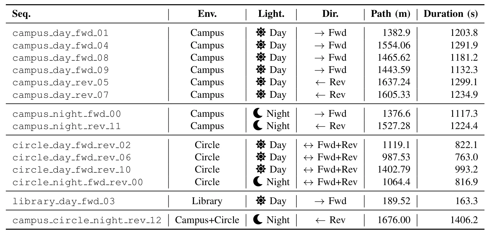
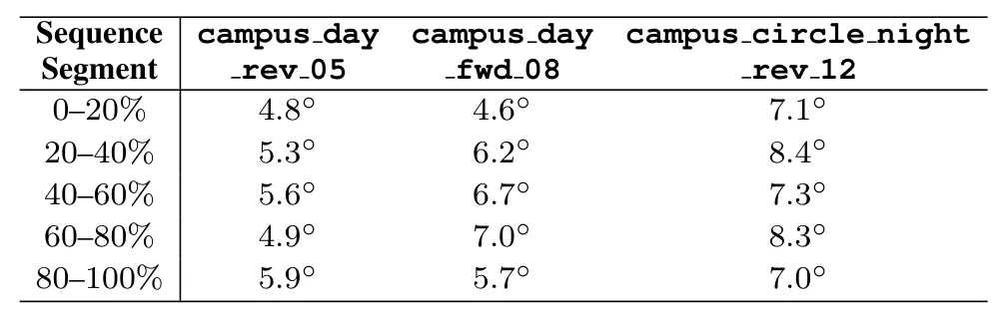
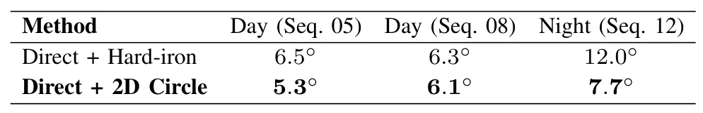

Mag4D-SLAM 数据集：重复遍历多模态四维地磁定位与建图数据集Mag4D-SLAM Dataset: A Repeated-Traversal Multi-Modal 4D Geomagnetic Dataset for Localization and Mapping
直接命中 GNSS-denied、多模态 SLAM 和长期定位，数据规模与正反向/昼夜重复遍历设计很有价值；算法贡献有限，仍需核查磁标定、车辆磁干扰、真值精度和跨季节稳定性。
一句话工作总结
以 18 km 多模态重复遍历数据系统研究地磁航向、磁场闭环与跨时段定位，为 GNSS 拒止 SLAM 提供数据基础。
摘要
地磁感知能够在无基础设施条件下提供绝对航向参考，并可在 GNSS 拒止或视觉退化时保持可用，但此前缺少支持系统研究的大规模室外机器人数据。Mag4D-SLAM 是首个大规模室外地磁 SLAM 数据集，包含 14 条、总计超过 18 km 的序列，同步采集 LiDAR、camera、IMU、tri-axis magnetometer 和 GNSS，并提供 SE(3) ground-truth poses。数据沿结构化校园路线采集，具有白天/夜间以及正向/反向配对的重复遍历设计。作者据此分析跨采集时段的磁场可重复性、无漂移全局航向估计，以及用于跨 session 地点识别的位置可辨识磁特征。该数据集面向 yaw drift 抑制、magnetic loop closure 和长期定位，并用于研究地磁如何补充视觉与 LiDAR，或在照明变化、结构重复及 GNSS-denied 长期运行中提供 fallback cue。
Geomagnetic sensing offers an infrastructure-free, absolute orientation reference that is robust to GNSS denial and visual degradation, yet no large-scale outdoor robotics dataset supports its systematic study in SLAM. Existing magnetic datasets are confined to small-scale indoor environments and lack the synchronized multi-modal sensing, repeated-traversal structure, and high-precision 6-DoF ground truth required for geomagnetic SLAM research. We present Mag4D-SLAM, the first large-scale outdoor geomagnetic SLAM dataset. It comprises 14 sequences totaling over 18 km of synchronized LiDAR, camera, IMU, tri-axis magnetometer, and GNSS measurements with SE(3) ground-truth poses, collected along structured campus trajectories under paired day/night conditions in both forward and reverse directions. Through repeated-traversal experiments, we analyze three core properties: magnetic field repeatability across different recording sessions (daytime and nighttime), drift-free global heading estimation, and location-discriminative magnetic signatures for cross-session place recognition. Mag4D-SLAM is designed to support research on yaw drift mitigation, magnetic loop closure, and long-term localization and to open new research questions on how geomagnetic sensing can complement visual and LiDAR modalities or provide a fallback cue under illumination changes, structural repetition, and GNSS-denied long-term operation.
中文解读摘录
- 作者：Bibhutibhusan Nayak, Hyoseok Ju, Giseop Kim
- 价值判断：今天与长期自主定位最直接相关的新作。它补齐大规模室外 geomagnetic SLAM 数据缺口，重点不是再做一个常规传感器数据集，而是让地磁航向约束、磁场闭环和跨时段地点识别可以系统评测。
- 数据设计：14 条序列、总里程超过 18 km，同步 LiDAR、camera、IMU、tri-axis magnetometer 与 GNSS，并提供 SE(3) ground truth；轨迹含白天/夜间配对，以及正向/反向重复遍历。
- 关键问题与边界：论文分析跨 session 磁场可重复性、无漂移全局 heading 和位置可辨识 magnetic signatures。后续需核查磁传感器标定、车辆软硬铁干扰、地图跨季节/施工变化、ground-truth 精度，以及与强视觉/LiDAR baseline 融合后的实际增益。
- 链接：arXiv · PDF
图表/页面预览

{kind=link}

{kind=link}

{kind=link}

{kind=link}

{kind=link}

{kind=link}

{kind=link}

{kind=link}

{kind=link}

{kind=link}
